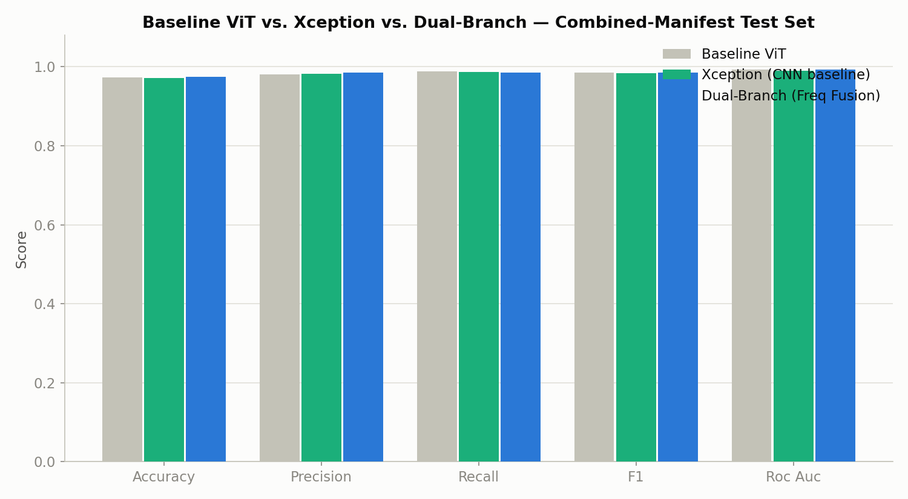
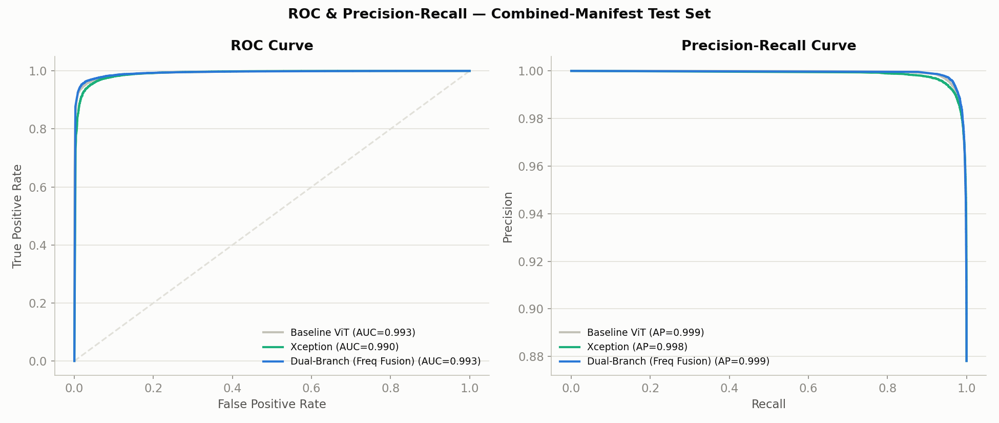
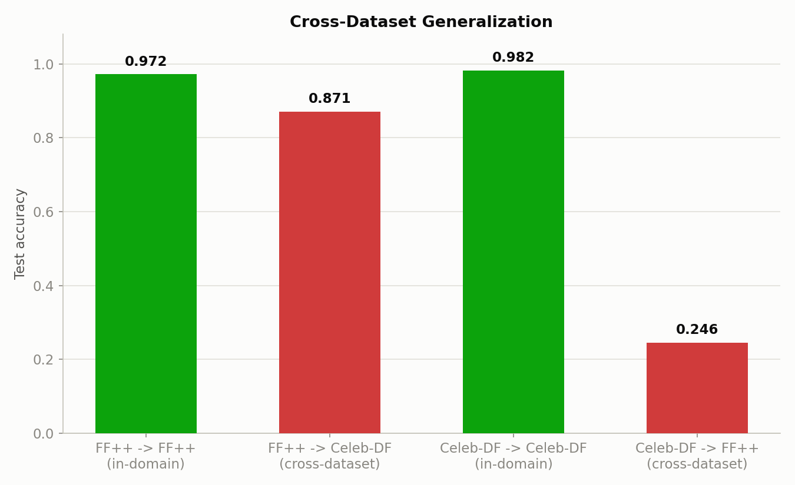
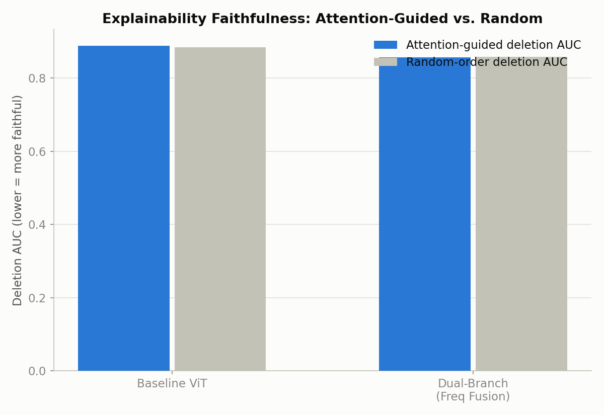
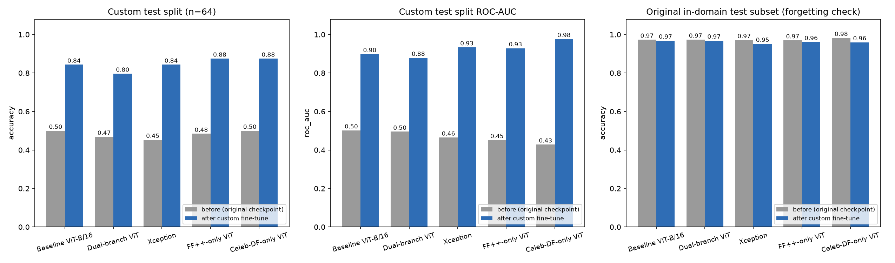
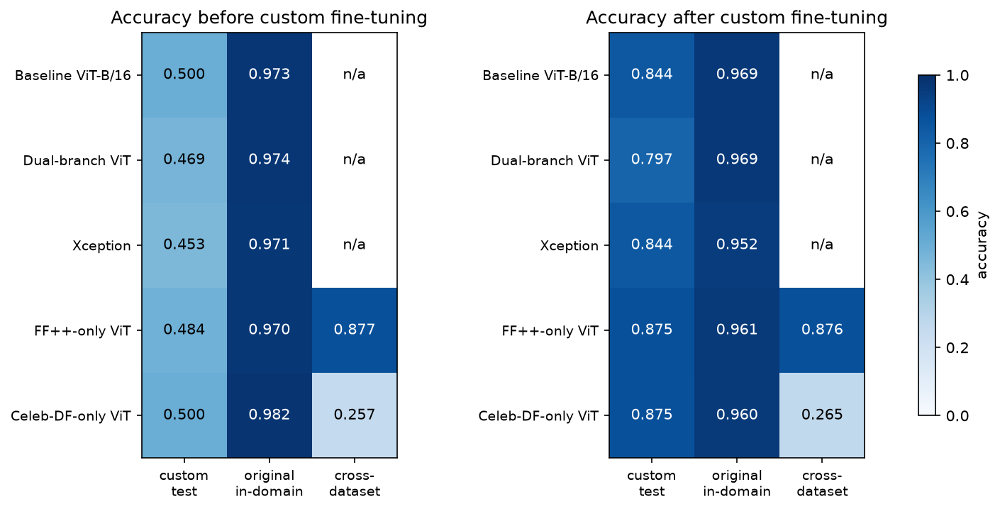

Results and evaluation
Headline metrics from the final report. All models share one identity-disjoint manifest of 224,534 face crops from FaceForensics++ (c23) and Celeb-DF-v2, with a 38,414-image held-out test split.
Model comparison
Combined test split, n = 38,414. The frequency-fusion branch gives a small but consistent edge; all three land within a quarter of a point.
| Model | Accuracy | Precision | Recall | F1 | ROC-AUC | Params |
|---|---|---|---|---|---|---|
| ViT-B/16 (baseline) | 97.31% | 98.09% | 98.86% | 98.47% | 99.31% | 85.80M |
| Dual-branch ViT + FFT | 97.47% | 98.61% | 98.51% | 98.56% | 99.31% | 86.45M |
| Xception (CNN) | 97.22% | 98.21% | 98.63% | 98.42% | 99.04% | 20.81M |


Per-dataset breakdown
Baseline ViT, combined-manifest model evaluated separately on each dataset's test rows.
| Test dataset | n | Accuracy | Precision | Recall | F1 | ROC-AUC |
|---|---|---|---|---|---|---|
| Celeb-DF-v2 | 14,632 | 97.85% | 97.95% | 99.61% | 98.77% | 99.44% |
| FaceForensics++ | 23,782 | 96.85% | 97.74% | 98.72% | 98.23% | 98.87% |
Cross-dataset generalization
Two additional ViT-B/16 models were trained on a single dataset each and evaluated on the other with zero exposure during training. This is the most consequential result in the report.
| Train → Test | Accuracy | Precision | Recall | F1 | ROC-AUC | Gap |
|---|---|---|---|---|---|---|
| FF++ → FF++ (in-domain) | 97.18% | 98.36% | 98.45% | 98.41% | 99.25% | — |
| FF++ → Celeb-DF (cross) | 87.08% | 90.17% | 95.53% | 92.77% | 81.46% | −10.1 pts |
| Celeb-DF → Celeb-DF (in-domain) | 98.19% | 99.16% | 98.75% | 98.95% | 99.71% | — |
| Celeb-DF → FF++ (cross) | 24.56% | 98.55% | 14.91% | 25.90% | 73.87% | −73.6 pts |

Explainability faithfulness
Deletion and insertion curves following the RISE protocol, using attention-rollout importance to order patch removal. A positive gap (random minus attention AUC) means attention-guided removal collapses confidence faster than random removal. n = 200 images per model.
| Model | Deletion AUC ↓ | Random-order deletion AUC | Insertion AUC ↑ | Faithfulness gap | Reading |
|---|---|---|---|---|---|
| ViT-B/16 (baseline) | 0.8892 | 0.8843 | 0.9015 | −0.0049 | ≈ random |
| Dual-branch ViT | 0.8567 | 0.8583 | 0.8906 | +0.0016 | ≈ random |
Heatmaps concentrate visually on the eyes, nose, and mouth, but under this stricter mask-free metric they are only marginally different from random ordering. This is reported as-is rather than smoothed over.

Custom dataset fine-tuning
210 real phone photos paired with 210 AI-generated re-renders of the same people, split by identity (147 / 31 / 32 identities). Custom test n = 64. Original-domain subsets n = 3,000, sampled once so before/after deltas are exact.
| Model | Custom acc (before → after) | Custom AUC (before → after) | Original acc (before → after) |
|---|---|---|---|
| Baseline ViT-B/16 | 50.0% → 84.4% | 0.502 → 0.898 | 97.3% → 96.9% |
| Dual-branch ViT | 46.9% → 79.7% | 0.495 → 0.879 | 97.4% → 96.9% |
| Xception | 45.3% → 84.4% | 0.465 → 0.934 | 97.1% → 95.2% |
| FF++-only ViT | 48.4% → 87.5% | 0.452 → 0.929 | 97.0% → 96.1% |
| Celeb-DF-only ViT | 50.0% → 87.5% | 0.429 → 0.977 | 98.2% → 96.0% |

